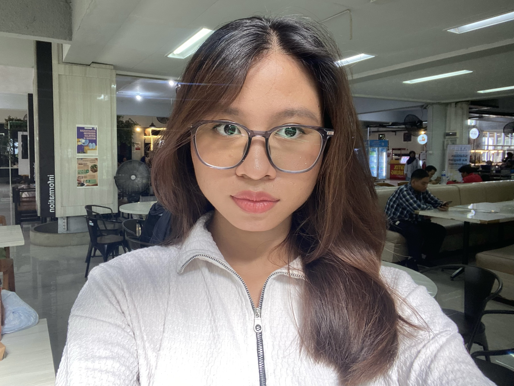

✴ HALO, SAYA
INFORMATICS STUDENTS

Mahasiswa Teknik Informatika ITS yang senang dalam mencoba banyak peluang untuk berkembang. Tertarik dalam mengikuti kegiatan yang dapat membantu pengembangan diri dan memperluas zona nyaman. Dari pengalaman-pengalaman yang saya lalui, saya terbiasa untuk lebih cekatan, mudah beradaptasi dengan berbagai peran, kreatif, dan terbuka terhadap tantangan baru.
2019 - 2022
2022 - 2025
Science
2025 - present
Teknik Informatika
Programming: C, C++, C#, Python, GoLang, HTML & CSS, Basic JS
Tools: VS Code, Git/GitHub, Figma, Microsoft Office
Logistik
Operational-Consumption
Kakak Pembimbing